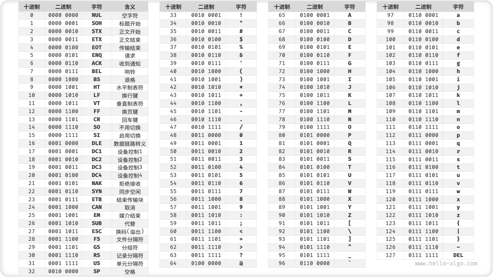
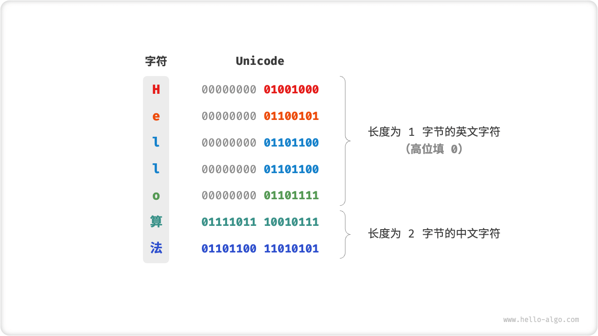
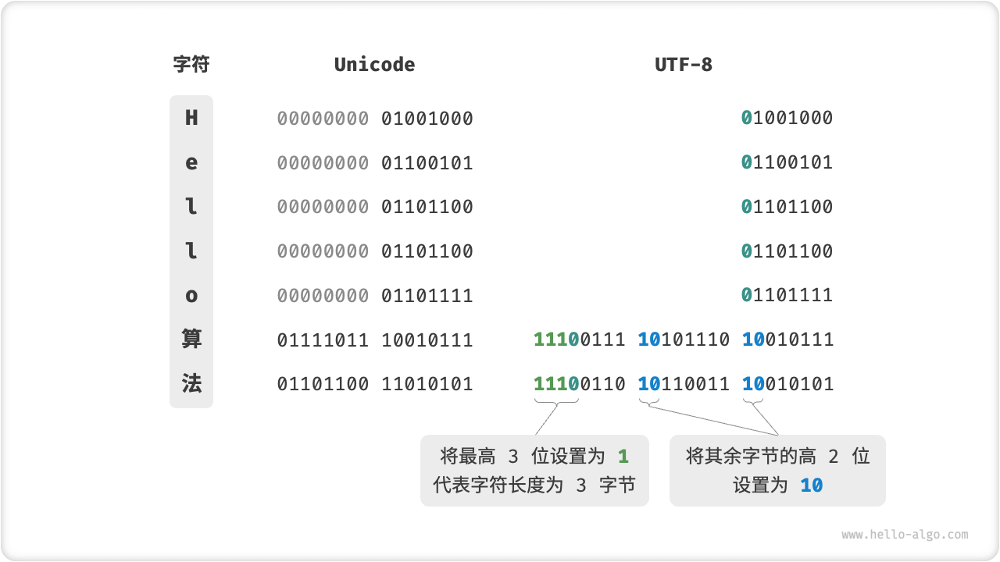

字符编码 *
在计算机中，所有数据都是以二进制数的形式存储的，字符 char 也不例外。为了表示字符，我们需要建立一套“字符集”，规定每个字符和二进制数之间的一一对应关系。有了字符集之后，计算机就可以通过查表完成二进制数到字符的转换。
ASCII 字符集
「ASCII 码」是最早出现的字符集，全称为“美国标准信息交换代码”。它使用 7 位二进制数（即一个字节的低 7 位）表示一个字符，最多能够表示 128 个不同的字符。如下图所示，ASCII 码包括英文字母的大小写、数字 0 ~ 9、一些标点符号，以及一些控制字符（如换行符和制表符）。

然而，ASCII 码仅能够表示英文。随着计算机的全球化，诞生了一种能够表示更多语言的字符集「EASCII」。它在 ASCII 的 7 位基础上扩展到 8 位，能够表示 256 个不同的字符。
在世界范围内，陆续出现了一批适用于不同地区的 EASCII 字符集。这些字符集的前 128 个字符统一为 ASCII 码，后 128 个字符定义不同，以适应不同语言的需求。
GBK 字符集
后来人们发现，EASCII 码仍然无法满足许多语言的字符数量要求。比如汉字大约有近十万个，光日常使用的就有几千个。中国国家标准总局于 1980 年发布了「GB2312」字符集，其收录了 6763 个汉字，基本满足了汉字的计算机处理需要。
然而，GB2312 无法处理部分的罕见字和繁体字。「GBK」字符集是在 GB2312 的基础上扩展得到的，它共收录了 21886 个汉字。在 GBK 的编码方案中，ASCII 字符使用一个字节表示，汉字使用两个字节表示。
Unicode 字符集
随着计算机的蓬勃发展，字符集与编码标准百花齐放，而这带来了许多问题。一方面，这些字符集一般只定义了特定语言的字符，无法在多语言环境下正常工作。另一方面，同一种语言也存在多种字符集标准，如果两台电脑安装的是不同的编码标准，则在信息传递时就会出现乱码。
那个时代的研究人员就在想：如果推出一个足够完整的字符集，将世界范围内的所有语言和符号都收录其中，不就可以解决跨语言环境和乱码问题了吗？在这种想法的驱动下，一个大而全的字符集 Unicode 应运而生。
「Unicode」的全称为“统一字符编码”，理论上能容纳一百多万个字符。它致力于将全球范围内的字符纳入到统一的字符集之中，提供一种通用的字符集来处理和显示各种语言文字，减少因为编码标准不同而产生的乱码问题。
自 1991 年发布以来，Unicode 不断扩充新的语言与字符。截止 2022 年 9 月，Unicode 已经包含 149186 个字符，包括各种语言的字符、符号、甚至是表情符号等。在庞大的 Unicode 字符集中，常用的字符占用 2 字节，有些生僻的字符占 3 字节甚至 4 字节。
Unicode 是一种字符集标准，本质上是给每个字符分配一个编号（称为“码点”），但它并没有规定在计算机中如何存储这些字符码点。我们不禁会问：当多种长度的 Unicode 码点同时出现在同一个文本中时，系统如何解析字符？例如给定一个长度为 2 字节的编码，系统如何确认它是一个 2 字节的字符还是两个 1 字节的字符？
对于以上问题，一种直接的解决方案是将所有字符存储为等长的编码。如下图所示，“Hello”中的每个字符占用 1 字节，“算法”中的每个字符占用 2 字节。我们可以通过高位填 0 ，将“Hello 算法”中的所有字符都编码为 2 字节长度。这样系统就可以每隔 2 字节解析一个字符，恢复出这个短语的内容了。

然而 ASCII 码已经向我们证明，编码英文只需要 1 字节。若采用上述方案，英文文本占用空间的大小将会是 ASCII 编码下大小的两倍，非常浪费内存空间。因此，我们需要一种更加高效的 Unicode 编码方法。
UTF-8 编码
目前，UTF-8 已成为国际上使用最广泛的 Unicode 编码方法。它是一种可变长的编码，使用 1 到 4 个字节来表示一个字符，根据字符的复杂性而变。ASCII 字符只需要 1 个字节，拉丁字母和希腊字母需要 2 个字节，常用的中文字符需要 3 个字节，其他的一些生僻字符需要 4 个字节。
UTF-8 的编码规则并不复杂，分为以下两种情况。
- 对于长度为 1 字节的字符，将最高位设置为 \(0\)、其余 7 位设置为 Unicode 码点。值得注意的是，ASCII 字符在 Unicode 字符集中占据了前 128 个码点。也就是说，UTF-8 编码可以向下兼容 ASCII 码。这意味着我们可以使用 UTF-8 来解析年代久远的 ASCII 码文本。
- 对于长度为 \(n\) 字节的字符（其中 \(n > 1\)），将首个字节的高 \(n\) 位都设置为 \(1\)、第 \(n + 1\) 位设置为 \(0\) ；从第二个字节开始，将每个字节的高 2 位都设置为 \(10\) ；其余所有位用于填充字符的 Unicode 码点。
下图展示了“Hello算法”对应的 UTF-8 编码。观察发现，由于最高 \(n\) 位都被设置为 \(1\) ，因此系统可以通过读取最高位 \(1\) 的个数来解析出字符的长度为 \(n\) 。
但为什么要将其余所有字节的高 2 位都设置为 \(10\) 呢？实际上，这个 \(10\) 能够起到校验符的作用。假设系统从一个错误的字节开始解析文本，字节头部的 \(10\) 能够帮助系统快速的判断出异常。
之所以将 \(10\) 当作校验符，是因为在 UTF-8 编码规则下，不可能有字符的最高两位是 \(10\) 。这个结论可以用反证法来证明：假设一个字符的最高两位是 \(10\) ，说明该字符的长度为 \(1\) ，对应 ASCII 码。而 ASCII 码的最高位应该是 \(0\) ，与假设矛盾。

除了 UTF-8 之外，常见的编码方式还包括以下两种。
- UTF-16 编码：使用 2 或 4 个字节来表示一个字符。所有的 ASCII 字符和常用的非英文字符，都用 2 个字节表示；少数字符需要用到 4 个字节表示。对于 2 字节的字符，UTF-16 编码与 Unicode 码点相等。
- UTF-32 编码：每个字符都使用 4 个字节。这意味着 UTF-32 会比 UTF-8 和 UTF-16 更占用空间，特别是对于 ASCII 字符占比较高的文本。
从存储空间的角度看，使用 UTF-8 表示英文字符非常高效，因为它仅需 1 个字节；使用 UTF-16 编码某些非英文字符（例如中文）会更加高效，因为它只需要 2 个字节，而 UTF-8 可能需要 3 个字节。
从兼容性的角度看，UTF-8 的通用性最佳，许多工具和库都优先支持 UTF-8 。
编程语言的字符编码
对于以往的大多数编程语言，程序运行中的字符串都采用 UTF-16 或 UTF-32 这类等长的编码。在等长编码下，我们可以将字符串看作数组来处理，这种做法具有以下优点。
- 随机访问: UTF-16 编码的字符串可以很容易地进行随机访问。UTF-8 是一种变长编码，要找到第 \(i\) 个字符，我们需要从字符串的开始处遍历到第 \(i\) 个字符，这需要 \(O(n)\) 的时间。
- 字符计数: 与随机访问类似，计算 UTF-16 字符串的长度也是 \(O(1)\) 的操作。但是，计算 UTF-8 编码的字符串的长度需要遍历整个字符串。
- 字符串操作: 在 UTF-16 编码的字符串中，很多字符串操作（如分割、连接、插入、删除等）都更容易进行。在 UTF-8 编码的字符串上进行这些操作通常需要额外的计算，以确保不会产生无效的 UTF-8 编码。
实际上，编程语言的字符编码方案设计是一个很有趣的话题，其涉及到许多因素。
- Java 的
String类型使用 UTF-16 编码，每个字符占用 2 字节。这是因为 Java 语言设计之初，人们认为 16 位足以表示所有可能的字符。然而，这是一个不正确的判断。后来 Unicode 规范扩展到了超过 16 位，所以 Java 中的字符现在可能由一对 16 位的值（称为“代理对”）表示。 - JavaScript 和 TypeScript 的字符串使用 UTF-16 编码的原因与 Java 类似。当 JavaScript 语言在 1995 年被 Netscape 公司首次引入时，Unicode 还处于相对早期的阶段，那时候使用 16 位的编码就足够表示所有的 Unicode 字符了。
- C# 使用 UTF-16 编码，主要因为 .NET 平台是由 Microsoft 设计的，而 Microsoft 的很多技术，包括 Windows 操作系统，都广泛地使用 UTF-16 编码。
由于以上编程语言对字符数量的低估，它们不得不采取“代理对”的方式来表示超过 16 位长度的 Unicode 字符。这是一个不得已为之的无奈之举。一方面，包含代理对的字符串中，一个字符可能占用 2 字节或 4 字节，从而丧失了等长编码的优势。另一方面，处理代理对需要增加额外代码，这增加了编程的复杂性和 Debug 难度。
出于以上原因，部分编程语言提出了一些不同的编码方案。
- Python 中的
str使用 Unicode 编码，并采用一种灵活的字符串表示，存储的字符长度取决于字符串中最大的 Unicode 码点。若字符串中全部是 ASCII 字符，则每个字符占用 1 个字节；如果有字符超出了 ASCII 范围，但全部在基本多语言平面（BMP）内，则每个字符占用 2 个字节；如果有超出 BMP 的字符，则每个字符占用 4 个字节。 - Go 语言的
string类型在内部使用 UTF-8 编码。Go 语言还提供了rune类型，它用于表示单个 Unicode 码点。 - Rust 语言的 str 和 String 类型在内部使用 UTF-8 编码。Rust 也提供了
char类型，用于表示单个 Unicode 码点。
需要注意的是，以上讨论的都是字符串在编程语言中的存储方式，这和字符串如何在文件中存储或在网络中传输是两个不同的问题。在文件存储或网络传输中，我们通常会将字符串编码为 UTF-8 格式，以达到最优的兼容性和空间效率。